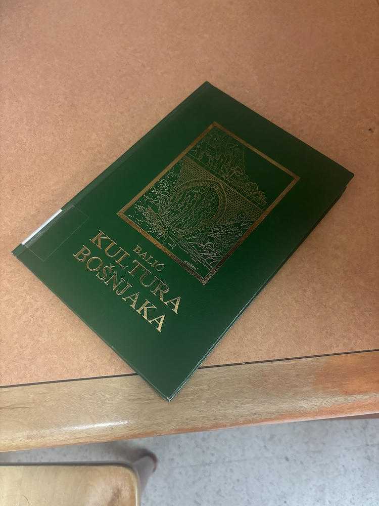
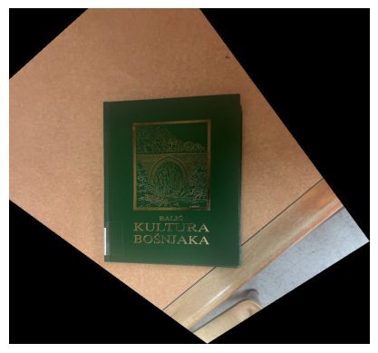
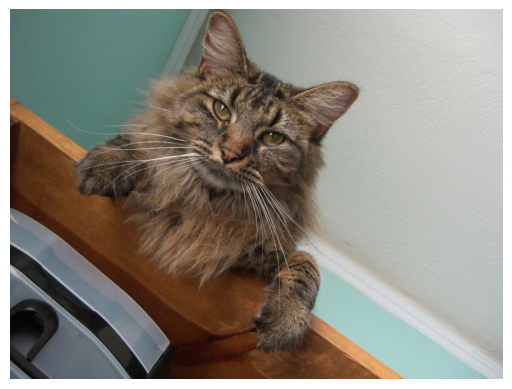
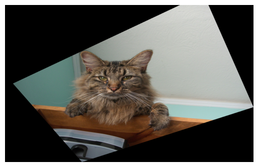
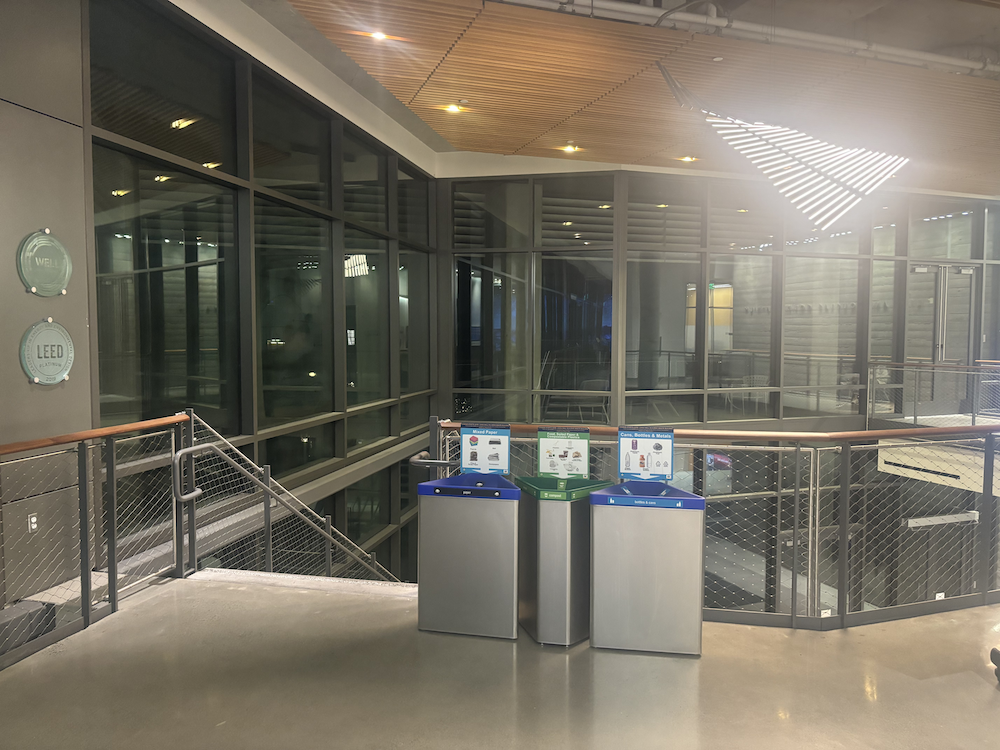
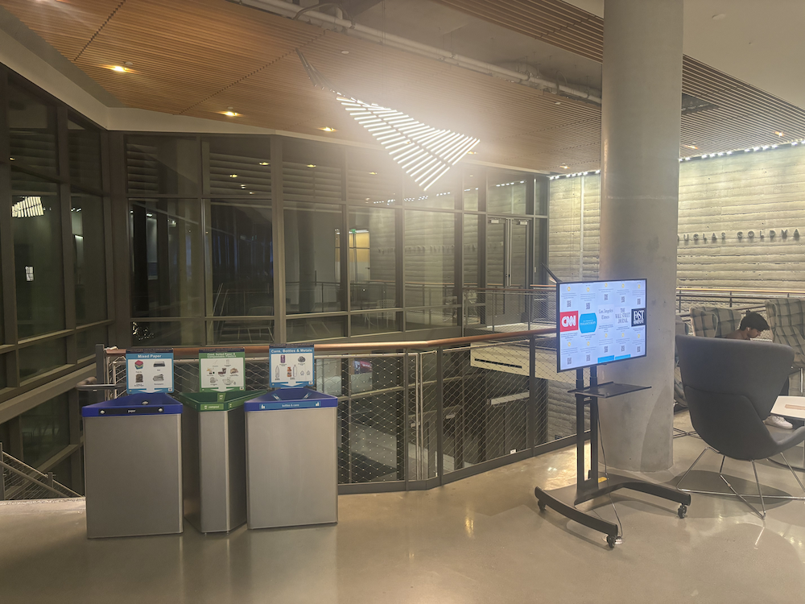
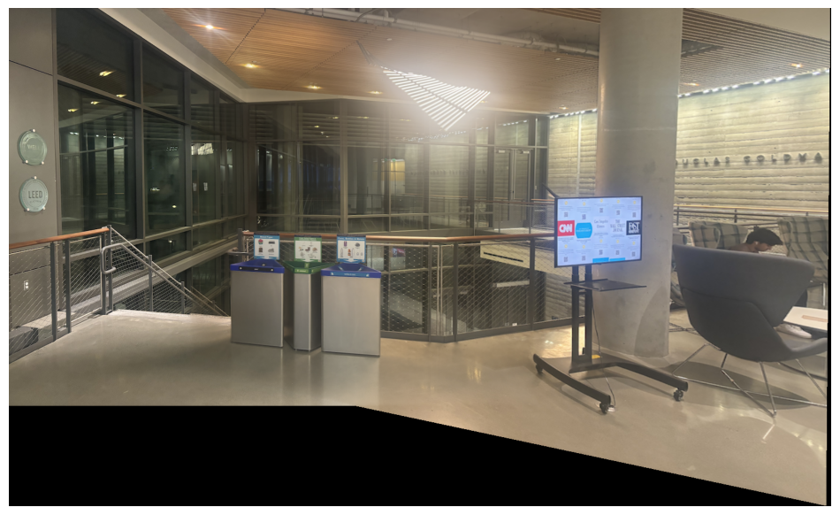
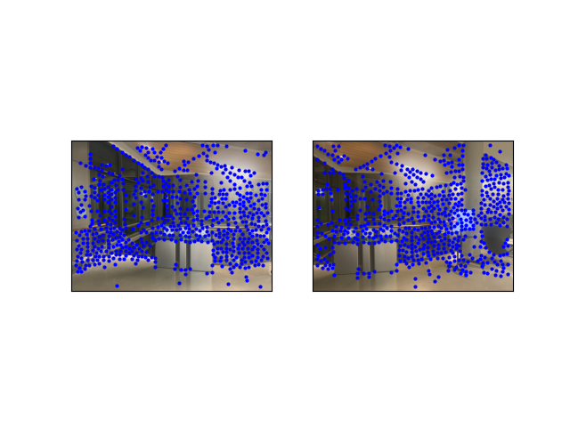
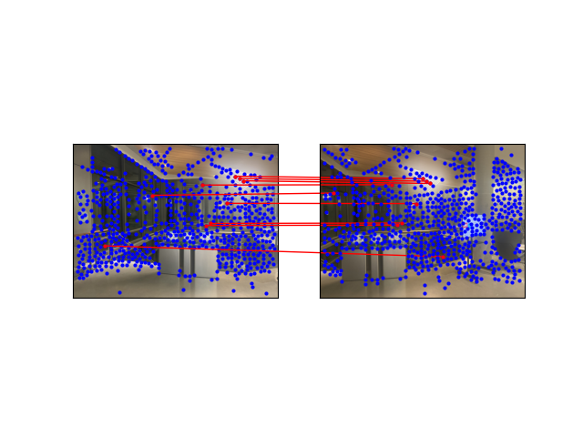
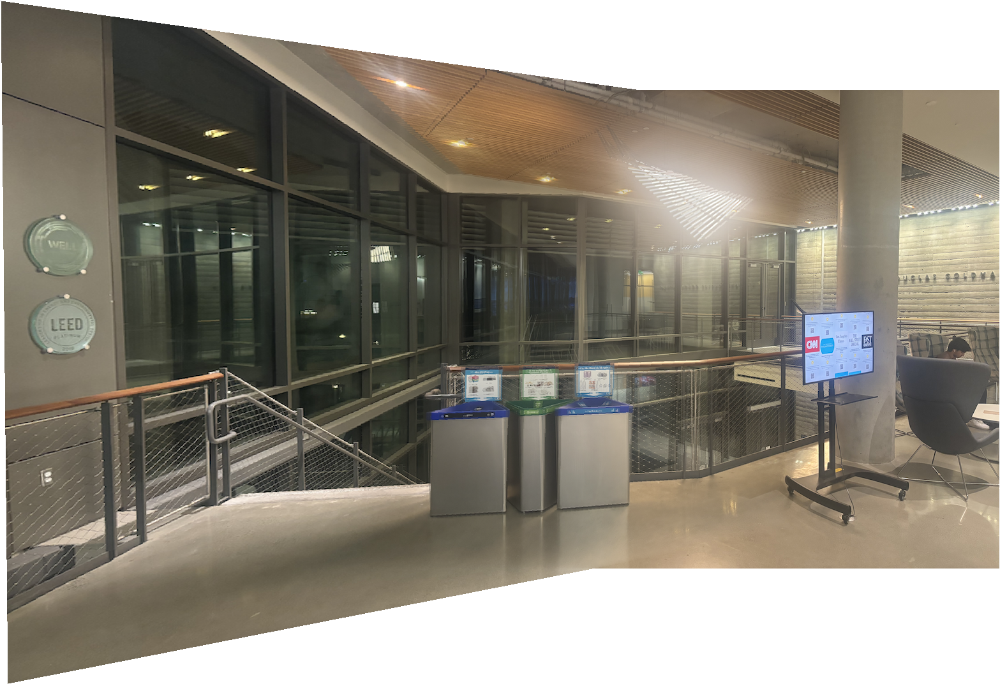

Here we have a picture of a book which is taken at an odd angle.
We can rectify this image through a few steps. First, we compute a homography matrix H between two sets of correspondence points we pre-define. Essentially, we pick the 4 corners of the book we want to see face up and then correspond those to a rectangle of a desired size. Then, we warp the image with this homography with scipy's interpolate.griddata function, producing the following output on the book we saw earlier.
We can try this with other images too, include nutmeg from a few projects ago.
Just as a reminder, here is nutmeg.
And here, we have his face rectified. Note that since my frame which I rectified to was a little wider than desired, nutmeg's face has been widened and is not to the same scale as before, demonstrating the sensitivity of the warp function even to small point discrepancies to the optimal correspondences.
Using this logic of warping, we can also blend two images together, for example, these two images of Cafe Think in Haas. One depicts the left side of the hall, and the other on the right side. The most prominent features present in both images are the trash cans and the light as well as some parts of the poled fencing, so I defined correspondence points primarily based on those features.
 Here is the combined version, which we calculated by first warping the left image with the earlier defined function, and then creating a mosaic with the right image at the desired size with alpha blending, which I implemented using cv2.distance_transform.
We can also do this automatically using the steps outlined in the paper "Multi-Image Matching using Multi-Scale Oriented Patches."
First we find the harris interest points as described in the paper with the given code, shown below.
Then, we use Adaptive Non-Maximal Suppression to select a subset of the calculated harris points as corners, which we subsequently extracted 8x8 patches to extract feature descriptors as outlined in the paper. Finally, we matched features from each image to obtain the following matches.
After using 4-pt RANSAC with 1000 iterations to keep only the inlier matches, producing the mosaic below.
As we can see, both methods produce similar results, doing a passable job of approximating a mosaic between the two images. The automatic version is slightly more blurry and is non-deterministic given the randomness of RANSAC - shown is one of the better runs, but many attempts did not return such good results.
The coolest thing about this project in my opinion was the extension of previous functions we wrote and methdologies we created in earlier projects to more advanced concepts. It feels like each project, we build on previous efforts to create more complete and interesting image techniques.